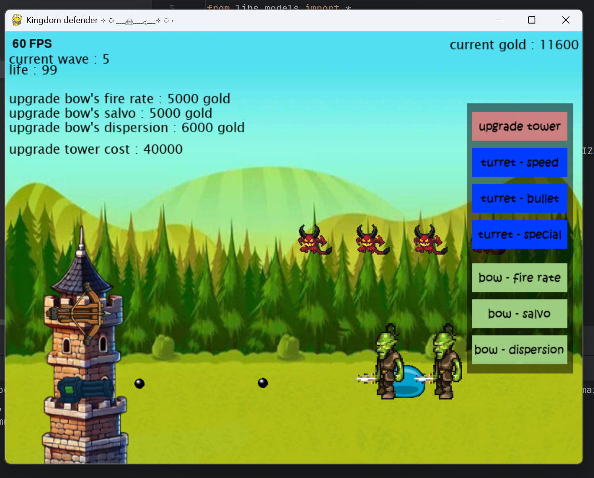
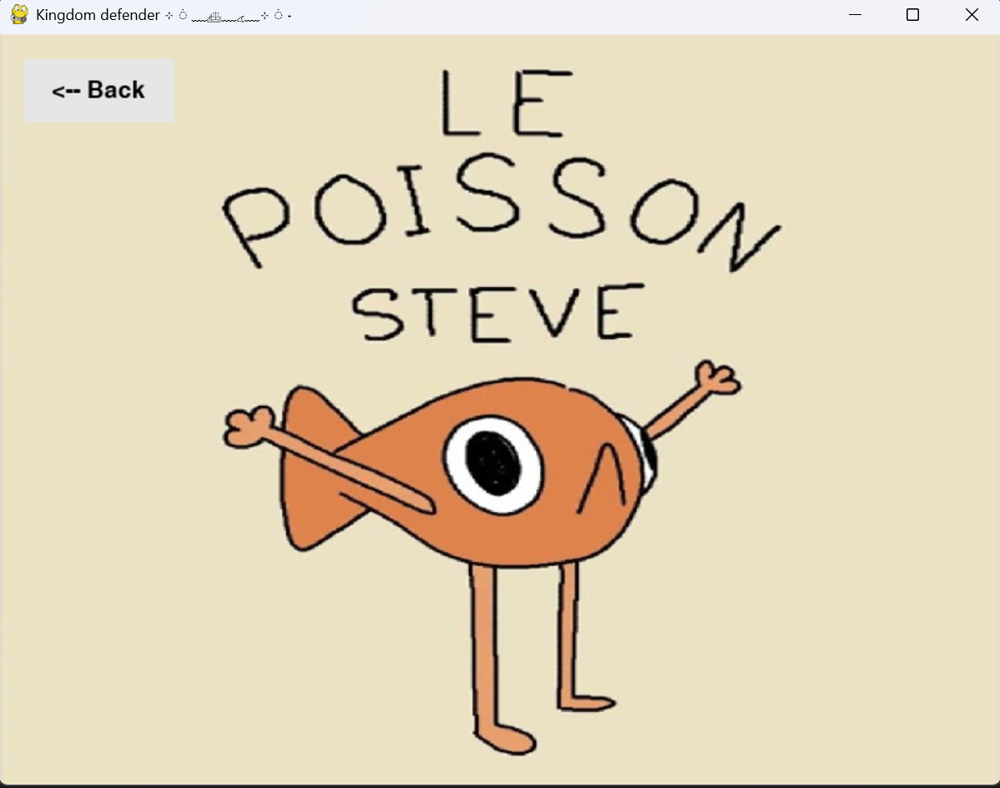

Notre Équipe
Découvrez les étudiants et enseignants qui font vivre le département informatique de l'EFREI.
Équipe Enseignante
Les enseignants-chercheurs et intervenants professionnels qui encadrent les étudiants du département informatique.
Prof. Pierre DUPONT
Responsable du Département Informatique
Docteur en informatique, spécialiste des architectures distribuées et des systèmes embarqués. Encadre les projets de fin d'études et les partenariats industriels.
pierre.dupont@efrei.frDr. Sophie MARTIN
Enseignante-Chercheuse — Cybersécurité
Docteure en sécurité des systèmes d'information, membre du laboratoire de recherche en cyberdéfense. Responsable de la filière Sécurité & Réseaux.
sophie.martin@efrei.frDr. Luc BERNARD
Enseignant-Chercheur — Data Science & IA
Spécialiste en apprentissage automatique et traitement des données massives. Dirige plusieurs projets de recherche en partenariat avec des entreprises du CAC 40.
luc.bernard@efrei.frClaire ROUSSEAU
Enseignante — Programmation & Algorithmique
Ingénieure logiciel reconvertie à l'enseignement, avec 10 ans d'expérience en industrie. Responsable des cours de Python, Java et algorithmique en classes préparatoires.
claire.rousseau@efrei.frÉquipe du Projet

Evan LEON
Développeur principal
Étudiant en informatique à l'EFREI depuis 2024. Responsable de la conception, du développement HTML/CSS/JS et de la gestion du dépôt Git du projet.
evan.leon@efrei.frTémoignage Étudiant
Si j'avais à résumer l'EFREI en un mot ? Opportunité. J'ai choisi l'EFREI pour rester dans une voie générale solide, et franchement, je ne regrette pas une seule seconde.
Dès le premier jour, le cadre parle de lui-même : des locaux modernes, professionnels, confortables — on se sent immédiatement dans un environnement sérieux et stimulant. Mais ce qui m'a vraiment surpris, c'est la qualité des profs. On parle de gens genuinement passionnés, qui ne se contentent pas de débiter un cours : ils nous poussent à creuser, à questionner, à comprendre le pourquoi avant le comment. Leur curiosité est contagieuse, et ça change tout.
Côté programme, on touche à tout : Python, Java, C, le web, les réseaux... Chaque nouveau langage, c'est une nouvelle façon de penser. Et croyez-moi, c'est addictif. Sans parler des associations — il y en a dans tous les domaines, pour tous les goûts, et elles donnent une vraie vie au campus.
Et les voyages à l'étranger ? Une expérience qui change de perspective, humainement et professionnellement. Découvrir une autre culture tout en faisant avancer son parcours, c'est tout simplement imbattable.
Bref, si vous hésitez encore... n'hésitez plus.
🏆 Projets Étudiants — Meilleur Jeu de l'Année
Kingdom Defender
Kingdom Defender est un jeu de stratégie captivant où vous devez protéger votre royaume contre des vagues d'ennemis toujours plus fortes. Construisez et améliorez vos tours, gérez vos ressources avec sagesse et mettez en place des stratégies gagnantes pour remporter la victoire.
Caractéristiques principales :
- Gameplay addictif et progressif
- Plusieurs tours uniques avec pouvoirs spéciaux
- Vagues d'ennemis de difficulté croissante
- Système de ressources et d'améliorations
- Graphismes colorés et immersifs
- Créé par un pro-gamer tout à fait spécial...
Galerie de Jeu




Accéder au Projet
Voir sur GitHubPour télécharger le jeu depuis GitHub :
- Cliquez sur le bouton vert "Code"
- Sélectionnez "Download ZIP"
- Extrayez le fichier ZIP téléchargé
- Lancez l'exécutable dans le dossier extrait